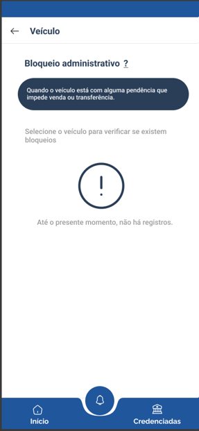

Introdução
No presente documento, abordamos conceitos e métodos baseados no Meta-modelo de Toranzo, que orienta a organização e representação dos principais elementos e suas relações na análise de requisitos, promovendo uma compreensão estruturada e rastreável
Adotamos os elos Backward-from e Forward-from, essenciais para a rastreabilidade dos requisitos:
Elos Backward-from: Apontam a origem de um requisito ou elemento, permitindo identificar de onde ele foi derivado e compreender o motivo de sua existência. Elos Forward-from: Indicam como um requisito ou elemento se relaciona com outros, evidenciando sua contribuição para a implementação ou satisfação de outros elementos do sistema.
Objetivo
O objetivo deste documento é detalhar a estruturação dos requisitos do aplicativo detran-df, utilizando o Meta-modelo de Toranzo como base.
Metodologia
Para fazermos esse modelo ultilizamos o template da tabela abaixo
Tabela 1: Modelo de cartão
| Item | Descrição |
|---|---|
| Descrição do requisito | qual requisito está tratando |
| Categoria | Ambiental, Organizacional, Gerencial ou Desenvolvimento |
| Elementos | Elementos rastreavéis |
| Elos Backward-from | Tipo de elo - Origem |
| Elos Forward-from | Tipo de elo - Relação |
| Imagem |
Fonte: Giovana Barbosa, 2025.
Legenda
Tabela 2: Níveis de informação.
| Nível de Informação | Descrição |
|---|---|
| Ambiental | Refere-se ao contexto externo no qual o sistema será inserido. Considera todos os fatores e restrições externas que podem influenciar o sistema, como fatores legais; cultura e sociedade; tecnologia disponível. |
| Organizacional | Foca na organização que está desenvolvendo. Analisa elementos internos, como objetivos; estratégias. |
| Gerencial | Refere-se a informações que auxiliam a gerência do projeto, como planejamento; comunicação. |
| Desenvolvimento | Abrange os aspectos técnicos diretamente relacionados à construção e implementação do sistema, como artefatos de requisitos; códigos. |
Fonte: Giovana Barbosa, João Lobo, 2025.
Tabela 3: Elementos identificadores.
| Elemento | Identificador / Descrição |
|---|---|
| Requisito | RFx - para requisitos funcionais RNFx - para requisitos não funcionais |
| Caso de uso | UCx |
| Cenário | CENx |
| História de usuário | USx |
| Técnica de elicitação | OBx - Observação ISx - Introspecção funcional NIS - Introspecção para os não funcionais BTx - Brainstorm QTx - Questionário |
| NFR Framework | NFRx |
| Especificação suplementar | Rux, RCx, RDx, RSx, RDEx, RINx, RFIx |
Fonte: Giovana Barbosa, João Lobo, 2025.
Tabela 4: Tipos de Elo.
| Tipo de Elo | Descrição |
|---|---|
| Elos Backward-from | Mostra-se o tipo de elo e a origem do requisito. |
| Elos Forward-from | Mostra-se o tipo de elo e como o requisito é satisfeito ou relacionado a outros elementos. |
Fonte: Giovana Barbosa, João Lobo, 2025.
Tabela 5: Relacionamento entre informações.
| Relacionamento | Descrição |
|---|---|
| Satisfação | Relacionado ao cumprimento de expectativas ou demandas. |
| Recurso | Conecta elementos que fornecem ou utilizam recursos necessários, podendo ser uma pessoa, equipe, tempo, orçamento, etc. |
| Responsabilidade | Relaciona quem ou o que é responsável por determinados elementos ou atividades. |
| Representação | Conecta elementos de representação ou abstração de algo. |
| Alocado | Representa a alocação de recursos, funcionalidades ou responsabilidades. |
| Agregação | Indica a composição de elementos para formar um todo. |
Fonte: Giovana Barbosa, João Lobo, 2025.
- Print: Imagem/protótipo da implementação
Rastreabilidade
Quem fez cada requisito
| Nome de quem verificou | quais requisitos verificados |
|---|---|
| Luiz Bessa | RF 01 a 04, 42 a 44, e RNF 20 |
| Giovana Barbosa | RF 05 a 10 e RNF 01 a 04 |
| João Lobo | RF 11, 13, 14, 16, 17, 21 e RNF 05 a 07 |
| Gabriel Mendes | RF 12, 15, 18, 19, 20, 22 e RNF 8 a 10 |
| Maria Eduarda | RF 23 a 28 e RNF 11 a 13 |
| Pedro Camilo | RF 29 a 34 e RNF 14 a 16 |
| Eric Akio | RF 35 a 41 e RNF 17 a 19 |
Fonte: Giovana Barbosa , 2025.
Requisitos Funcionais
RF01 E01
RF01 - Permitir consulta de multas e débitos do veículo
| Item | Descrição |
|---|---|
| Descrição do requisito | Permitir consulta de multas e débitos do veículo |
| Categoria | Desenvolvimento |
| Elementos | RF01, IS01, BS01 |
| Elos Backward-from | Agregação – IS01, OBS001. O requisito originou-se da Introspecção funcional e de Observações de usuários. |
| Elos Forward-from | Satisfação – viabiliza transparência sobre débitos do veículo. Agregação – alocado no Módulo de Consultas. |
Autor: Luiz Bessa, 2025.
RF02 E02
RF02 - Realizar agendamento de serviços
| Item | Descrição |
|---|---|
| Descrição do requisito | Realizar agendamento de serviços (vistoria, CNH, etc.) |
| Categoria | Desenvolvimento |
| Elementos | RF02, IS02, BS02 |
| Elos Backward-from | Agregação – IS02, OBS002. Originado por Introspecção funcional e Observações. |
| Elos Forward-from | Satisfação – permite ao usuário reservar horários sem filas. Agregação – alocado no Módulo de Agendamento. |
Autor: Luiz Bessa, 2025.
RF03 E03
RF03 - Exibir informações da CNH e pontuação
| Item | Descrição |
|---|---|
| Descrição do requisito | Exibir informações da CNH e pontuação |
| Categoria | Desenvolvimento |
| Elementos | RF03, IS03, BS01, OBS003 |
| Elos Backward-from | Agregação – IS03, BS01, OBS003. Derivado de Introspecção, Brainstorm e Observações. |
| Elos Forward-from | Satisfação – fornece monitoramento da situação da carteira. Agregação – alocado no Módulo Carteira Digital. |
Autor: Luiz Bessa, 2025.
RF04 E04
RF04 - Realizar a transferência da autuação de infração
| Item | Descrição |
|---|---|
| Descrição do requisito | Realizar a transferência da autuação de infração |
| Categoria | Desenvolvimento |
| Elementos | RF04, IS04 |
| Elos Backward-from | Agregação – IS04. Originado da Introspecção funcional. |
| Elos Forward-from |
Satisfação – facilita transferência de responsabilidade pela infração. Agregação – alocado no Módulo de Infrações. |
Autor: Luiz Bessa, 2025.
RF05 E05
RF05 - Exibir notificações de prazos e documentos vencidos
| Item | Descrição |
|---|---|
| Descrição do requisito | Exibir notificações de prazos e documentos vencidos |
| Categoria | Desenvolvimento |
| Elementos | RF05, IS05,BS06,US11 |
| Elos Backward-from | Agregação – IS05, BS06. O requisito originou-se da Introspecção funcional e da técnica de Brainstorm |
| Elos Forward-from |
Satisfação – O requisito será utilizado para alertar o usuário sobre pendências documentais Agregação – O requisito será alocado no Módulo de Notificações |

|
Autor: Giovana Barbosa, 2025.
RF06 E06
RF06 - Realizar transferência de documento do veículo
| Item | Descrição |
|---|---|
| Descrição do requisito | Realizar transferência de documento do veículo |
| Categoria | Desenvolvimento |
| Elementos | RF06, IS06, US18 |
| Elos Backward-from | Agregação – IS06. O requisito originou-se da técnica de Introspecção funcional |
| Elos Forward-from |
Satisfação – O requisito atende à necessidade de serviços veiculares digitais Agregação – O requisito será classificado no Módulo de Serviços do Veículo |
Autor: Giovana Barbosa, 2025.
RF07 E07
RF07 - Trocar a PPD para CNH definitiva pelo app
| Item | Descrição |
|---|---|
| Descrição do requisito | Trocar a PPD para CNH definitiva pelo app |
| Categoria | Desenvolvimento |
| Elementos | RF07, BS02 US19 |
| Elos Backward-from | Agregação – BS02. O requisito originou-se da técnica de Brainstorm |
| Elos Forward-from |
Satisfação – O requisito satisfaz a jornada de renovação de CNH dentro do app Agregação – O requisito será alocado no Módulo de CNH |
Autor: Giovana Barbosa, 2025.
RF08 E08
RF08 - Sistema de pagamento de taxas e débitos
| Item | Descrição |
|---|---|
| Descrição do requisito | Sistema de pagamento de taxas e débitos |
| Categoria | Desenvolvimento |
| Elementos | RF08, BS03, UC02, US32 |
| Elos Backward-from | Agregação – BS03. O requisito originou-se da técnica de Brainstorm |
| Elos Forward-from |
Satisfação – O requisito atende à necessidade de quitação de pendências pelo app Agregação – O requisito será classificado no Módulo Financeiro |
Autor: Giovana Barbosa, 2025.
RF09 E09
RF09 - Aviso automático em caso de roubo/recuperação do carro
| Item | Descrição |
|---|---|
| Descrição do requisito | Aviso automático em caso de roubo/recuperação do carro |
| Categoria | Desenvolvimento |
| Elementos | RF09, BS04 UC12, US12 |
| Elos Backward-from | Agregação – BS04. O requisito originou-se da técnica de Brainstorm |
| Elos Forward-from |
Satisfação – O requisito prevê segurança e alerta em caso de incidentes com o veículo Agregação – O requisito será incluído no Módulo de Segurança e Alertas |
|
|
|
| Link do prototipo |
Autor: Giovana Barbosa, 2025.
RF10 E010
RF10 - Consulta de CNH, documentos e multas
| Item | Descrição |
|---|---|
| Descrição do requisito | Consulta de CNH, documentos e multas |
| Categoria | Desenvolvimento |
| Elementos | RF10, BS05, US03 |
| Elos Backward-from | Agregação – BS05. O requisito originou-se da técnica de Brainstorm |
| Elos Forward-from |
Satisfação – O requisito facilita o acesso do usuário à sua situação veicular Agregação – O requisito será classificado no Módulo de Consultas |
Autor: Giovana Barbosa, 2025.
RF11 E011
RF11 - Agendamento online para provas teóricas e práticas
| Item | Descrição |
|---|---|
| Descrição do requisito | Seção dentro do aplicativo, onde um usuário que está no processo de obter a sua CNH, consegue agendar a prova teórica e prática de forma online. |
| Categoria | Ambiental |
| Elementos | RF11, BS07, UC15 |
| Elos Backward-from | Agregação – BS07. O requisito originou-se da técnica de Brainstorm |
| Elos Forward-from |
Satisfação – O requisito facilita o acesso do usuário ao agendamento de provas, eliminando a necessidade de deslocamento até a autoescola. Agregação – O requisito será classificado no Módulo de Consultas. Recurso - API do Detran, banco de dados, equipe de desenvolvimento. Responsabilidade - Time de backend responsável pela implementação. |
| Imagem - Não implementado |
Autor: João Lobo, 2025.
RF12 E012
RF12 - Opção para adicionar quilometragem do seu carro
| Item | Descrição |
|---|---|
| Descrição do requisito | Uma Área dentro do aplicativo para autoescolas que contém,avaliações, comentários e localização. |
| Categoria | Ambiental |
| Elementos | RF12, BS08, US40 |
| Elos Backward-from | Agregação – BS08. O requisito originou-se da técnica de Brainstorm |
| Elos Forward-from |
Satisfação – O requisito atende à necessidade do usuário ao oferecer uma área no aplicativo dedicada às autoescolas, com avaliações, comentários e localização, facilitando a escolha da instituição. Agregação – O requisito será classificado no Módulo de Consultas. |
| Link do protótipo |
Autor: Gabriel Mendes, 2025.
RF13 E013
RF13 - Guia de documentos necessários para cada tipo de serviço
| Item | Descrição |
|---|---|
| Descrição do requisito | Um guia de documentos necessários para cada tipo de serviço, para facilitar o conhecimento do usuário sobre cada documento. |
| Categoria | Ambiental |
| Elementos | RF13, BS09, US41 |
| Elos Backward-from | Agregação – BS09. O requisito originou-se da técnica de Brainstorm |
| Elos Forward-from |
Satisfação – O requisito atende à expectativa do usuário ao fornecer um guia claro sobre os documentos exigidos para cada tipo de serviço, facilitando o entendimento e evitando deslocamentos desnecessários por falta de informação. Agregação – O requisito será classificado no Módulo de Consultas. |
| Imagem - Não Implementado |
Autor: João Lobo, 2025.
RF14 E014
RF14 - Chat com IA para tirar dúvidas
| Item | Descrição |
|---|---|
| Descrição do requisito | Um chat com uma inteligência artificial para tirar dúvidas, sobre qualquer tema que se relacione ao Detran e ao aplicativo, mas tendo suas limitações. |
| Categoria | Desenvolvimento |
| Elementos | RF14, BS10, US34 |
| Elos Backward-from | Agregação – BS010. O requisito originou-se da técnica de Brainstorm |
| Elos Forward-from |
Satisfação – O requisito atende à necessidade do usuário ao oferecer um chat com inteligência artificial para tirar dúvidas relacionadas ao Detran e ao aplicativo, proporcionando suporte imediato e acessível, mesmo com suas limitações. Agregação – O requisito será classificado no Módulo de Consultas. Recurso - Serviço de IA e infraestrutura para chat. |
Autor: João Lobo, 2025.
RF15 E015
RF15 - Integração com CNH Digital
| Item | Descrição |
|---|---|
| Descrição do requisito | Ter a possibilidade de entrar no aplicativo, utilizando a CNH Digital, onde utiliza as mesmas credenciais e facilita a autenticação. |
| Categoria | Desenvolvimento |
| Elementos | RF15, BS11, US39 |
| Elos Backward-from | Agregação – BS11. O requisito originou-se da técnica de Brainstorm |
| Elos Forward-from |
Satisfação – O requisito atende à expectativa do usuário ao permitir o acesso ao aplicativo utilizando as credenciais do Gov.br, facilitando a autenticação por meio de um login unificado e já conhecido. Agregação – O requisito será classificado no Módulo de Consultas Recurso - Integração com sistema Gov.br para autenticação. |
| Link do protótipo |
Autor: Gabriel Mendes, 2025.
RF16 E016
RF16 - Atendimento ao vivo com servidor do DETRAN via chat/vídeo
| Item | Descrição |
|---|---|
| Descrição do requisito | Ter um atendimento via chat/vídeo com um servidor do Detran-DF. |
| Categoria | Ambiental |
| Elementos | RF16, BS12, US35 |
| Elos Backward-from | Agregação – BS05. O requisito originou-se da técnica de Brainstorm |
| Elos Forward-from |
Satisfação – O requisito atende à necessidade do usuário ao oferecer atendimento via chat ou vídeo com um servidor do Detran-DF, proporcionando suporte direto e personalizado para esclarecer dúvidas e resolver questões. Agregação – O requisito será classificado no Módulo de Consultas Recurso - Plataforma de chat/vídeo e equipe de atendimento do Detran. |
Autor: João Lobo, 2025.
RF17 E17
RF17 - Exibir status do licenciamento e do IPVA do veículo
| Item | Descrição |
|---|---|
| Descrição do requisito | Exibir status do licenciamento e do IPVA do veículo |
| Categoria | Desenvolvimento |
| Elementos | RF17, GLO03, US04 |
| Elos Backward-from | Agregação – GLO03. O requisito originou-se do Glossário. |
| Elos Forward-from |
Satisfação – O requisito permite ao usuário acompanhar a regularidade do veículo. Agregação – O requisito será alocado no Módulo de Consultas Veiculares. |
Autor: João Lobo, 2025.
RF18 E18
RF18 - Gerar segunda via da CNH e CRLV digitalmente
| Item | Descrição | |
|---|---|---|
| Descrição do requisito | Gerar segunda via da CNH e CRLV digitalmente | |
| Categoria | Desenvolvimento | |
| Elementos | RF18, GLO04, US20 | |
| Elos Backward-from | Agregação – GLO04. O requisito originou-se do Glossário. | |
| Elos Forward-from |
Satisfação – O requisito facilita a obtenção de documentos digitais. Agregação – O requisito será alocado no Módulo de Documentos Digitais. |
|
Autor: Gabriel Mendes, 2025.
RF19 E19
RF19 - Deve ser possível consultar a pontuação da CNH diretamente no aplicativo
| Item | Descrição |
|---|---|
| Descrição do requisito | Deve ser possível consultar a pontuação da CNH diretamente no aplicativo |
| Categoria | Desenvolvimento |
| Elementos | RF19, GLO01, US02 |
| Elos Backward-from | Agregação – GLO01. O requisito originou-se do Glossário. |
| Elos Forward-from |
Satisfação – O requisito permite ao usuário acompanhar sua pontuação. Agregação – O requisito será alocado no Módulo de CNH. |
Autor: Gabriel Mendes, 2025.
RF20 E20
RF20 - O aplicativo deve permitir o agendamento de serviços presenciais
| Item | Descrição |
|---|---|
| Descrição do requisito | O aplicativo deve permitir o agendamento de serviços presenciais |
| Categoria | Desenvolvimento |
| Elementos | RF20, GLO02, US02 |
| Elos Backward-from | Agregação – GLO02. O requisito originou-se do Glossário. |
| Elos Forward-from |
Satisfação – O requisito facilita o agendamento de serviços pelo app. Agregação – O requisito será alocado no Módulo de Agendamento. |
Autor: Gabriel Mendes, 2025.
RF21 E21
RF21 - Permitir acompanhamento de processos
| Item | Descrição |
|---|---|
| Descrição do requisito | Permitir acompanhamento de processos |
| Categoria | Desenvolvimento |
| Elementos | RF21, OBS004, US21 |
| Elos Backward-from | Agregação – OBS004. O requisito originou-se da Observação. |
| Elos Forward-from |
Satisfação – O requisito permite ao usuário acompanhar processos em andamento. Agregação – O requisito será alocado no Módulo de Processos. |
Autor: João Lobo, 2025.
RF22 E22
RF22 - Exibir notificações de prazos e documentos vencidos
| Item | Descrição |
|---|---|
| Descrição do requisito | Exibir notificações de prazos e documentos vencidos |
| Categoria | Desenvolvimento |
| Elementos | RF22, OBS005, US11 |
| Elos Backward-from | Agregação – OBS005. O requisito originou-se da Observação. |
| Elos Forward-from |
Satisfação – O requisito permite alertar o usuário sobre pendências documentais. Agregação – O requisito será alocado no Módulo de Notificações. |
Autor: Gabriel Mendes, 2025.
RF23 E23
RF23 - Permitir consulta do status do licenciamento em tempo real
| Item | Descrição |
|---|---|
| Descrição do requisito | Permitir consulta do status do licenciamento em tempo real |
| Categoria | Desenvolvimento |
| Elementos | RF23, Storytelling, US42 |
| Elos Backward-from | Agregação – Storytelling. O requisito originou-se da técnica de Storytelling. |
| Elos Forward-from |
Satisfação – O requisito atende à demanda por acompanhamento ativo de documentação Agregação – O requisito será alocado no Módulo de Licenciamento |
Autor: Maria Eduarda, 2025.
RF24 E24
RF24 - Permitir geração de boleto e pagamento integrado no app
| Item | Descrição |
|---|---|
| Descrição do requisito | Permitir geração de boleto e pagamento integrado no app |
| Categoria | Desenvolvimento |
| Elementos | RF24 , STO01, US43 |
| Elos Backward-from | Agregação – Storytelling. O requisito originou-se da técnica de Storytelling. |
| Elos Forward-from |
Satisfação – O requisito atende à necessidade de quitar débitos diretamente no app Agregação – Módulo Financeiro |
Autor: Maria Eduarda, 2025.
RF25 E25
RF25 - Permitir consulta e detalhamento de infrações com imagens
| Item | Descrição |
|---|---|
| Descrição do requisito | Permitir consulta e detalhamento de infrações com imagens |
| Categoria | Desenvolvimento |
| Elementos | RF25 STO02, US44 |
| Elos Backward-from | Agregação – Storytelling. O requisito originou-se da técnica de Storytelling. |
| Elos Forward-from |
Satisfação – Proporciona transparência sobre multas Agregação – Módulo de Infrações |

|
Autor: Maria Eduarda, 2025.
RF26 E26
RF26 - Iniciar e acompanhar recurso de multa pelo app
| Item | Descrição |
|---|---|
| Descrição do requisito | Iniciar e acompanhar recurso de multa pelo app |
| Categoria | Desenvolvimento |
| Elementos | RF26, STO03, US45 |
| Elos Backward-from | Agregação – Storytelling. O requisito originou-se da técnica de Storytelling. |
| Elos Forward-from |
Satisfação – Facilita o processo de defesa do usuário Agregação – Módulo de Recursos |
Autor: Maria Eduarda, 2025.
RF27 E27
RF27 - Permitir agendamento de exame médico para CNH
| Item | Descrição |
|---|---|
| Descrição do requisito | Permitir agendamento de exame médico para CNH |
| Categoria | Desenvolvimento |
| Elementos | RF27, STO04, US46 |
| Elos Backward-from | Agregação – Storytelling. O requisito originou-se da técnica de Storytelling. |
| Elos Forward-from |
Satisfação – Automatiza agendamento necessário para renovação CNH Agregação – Módulo CNH |
Autor: Maria Eduarda, 2025.
RF28 E28
RF28 - Enviar notificações de vencimento da CNH, multas e licenciamento
| Item | Descrição |
|---|---|
| Descrição do requisito | Enviar notificações de vencimento da CNH, multas e licenciamento |
| Categoria | Desenvolvimento |
| Elementos | RF28, STO05, US47 |
| Elos Backward-from | Agregação – Storytelling. O requisito originou-se da técnica de Storytelling. |
| Elos Forward-from |
Satisfação – Melhora o acompanhamento do usuário sobre prazos Agregação – Módulo de Notificações |
Autor: Maria Eduarda, 2025.
RF 29 E 29
RF29 - Explicações simples sobre termos técnicos
| Item | Descrição |
|---|---|
| Descrição do requisito | Explicações simples de termos técnicos para entender melhor os processos. |
| Categoria | Desenvolvimento |
| Elementos | RF29 STO07, US36 |
| Elos Backward-from | Agregação – Storytelling. O requisito originou-se da técnica de Storytelling. |
| Elos Forward-from | Representação - Ajuda o usuário a compreender termos técnicos |
|  |
Autor: Pedro Camilo, 2025.
RF 30 E 30
RF30 - Canal de atendimento humano
| Item | Descrição |
|---|---|
| Descrição do requisito | Oferecer canal de atendimento humano (chat ou WhatsApp) para sanar dúvidas ou resolver questões pendentes. |
| Categoria | Desenvolvimento |
| Elementos | RF30, STO08, US36 |
| Elos Backward-from | Recurso – Storytelling. O requisito originou-se da técnica de Storytelling. |
| Elos Forward-from |
Satisfação – O requisito atende à necessidade do usuário ao oferecer atendimento via chat ou WhatsApp com um servidor do Detran-DF, proporcionando suporte direto e personalizado para esclarecer dúvidas. Recurso – Requer a integração com uma plataforma de mensagens e a alocação de equipe para o atendimento. Agregação – O requisito será incluído no Módulo de Suporte ao Cidadão. |
Autor: Pedro Camilo, 2025.
RF 31 E 31
RF31 - Reposição de placa Mercosul
| Item | Descrição |
|---|---|
| Descrição do requisito | Desejo solicitar uma nova placa Mercosul |
| Categoria | Desenvolvimento |
| Elementos | RF31, OBS006, US22 |
| Elos Backward-from | Responsabilidade – O requisito originou-se da técnica de Observação. |
| Elos Forward-from |
Responsabilidade – O requisito delega ao sistema a função de intermediar o processo de reposição da placa, incluindo instruções, documentos necessários e encaminhamento para o órgão competente. Agregação – Será incorporado ao Módulo de Veículos, dentro da seção de serviços. |
Autor: Pedro Camilo, 2025.
RF 32 E32
RF32 - Conversão de placa Mercosul
| Item | Descrição |
|---|---|
| Descrição do requisito | Desejo solicitar a troca da placa antiga para uma placa Mercosul |
| Categoria | Desenvolvimento |
| Elementos | RF31, OBS007, US23 |
| Elos Backward-from | Responsabilidade – O requisito originou-se da técnica de Observação. |
| Elos Forward-from |
Responsabilidade – O requisito define a responsabilidade do sistema em guiar o usuário no processo de conversão, informando etapas, prazos e vínculos com normativas vigentes. Agregação – Este serviço será parte do Módulo de Veículos, agrupado com outros serviços de placa. |
Autor: Pedro Camilo, 2025.
RF 33 E 33
RF33 - Histórico de infração do condutor
| Item | Descrição |
|---|---|
| Descrição do requisito | Ver o histórico de infração do condutor |
| Categoria | Desenvolvimento |
| Elementos | RF33, OBS008, US08 |
| Elos Backward-from | Agregação – O requisito originou-se da técnica de Observação. |
| Elos Forward-from |
Representação – O requisito será refletido na interface como uma lista de infrações organizadas cronologicamente, com detalhes sobre data, local e pontuação. Agregação – Será integrado ao Módulo de Condutor, servindo de base para outras funcionalidades como recurso de multa e consulta de pontos. |
Autor: Pedro Camilo, 2025.
RF 34 E 34
RF34 - Histórico de infração do veículo
| Item | Descrição |
|---|---|
| Descrição do requisito | Ver o histórico de infração do veículo |
| Categoria | Desenvolvimento |
| Elementos | RF34, OBS009, US08 |
| Elos Backward-from | Agregação – O requisito originou-se da técnica de Observação. |
| Elos Forward-from |
Representação – O requisito é representado por uma interface clara que exibe todas as infrações vinculadas ao veículo, incluindo status de pagamento e penalidades. Agregação – Será parte do Módulo de Veículos, com integração ao banco de dados de autuações. |
Autor: Pedro Camilo, 2025.
RF35 E35
RF35 - Conversão de autuação em penalidade
| Item | Descrição |
|---|---|
| Descrição do requisito | Conversão de autuação em penalidade |
| Categoria | Desenvolvimento |
| Elementos | RF35, OBS010, US24 |
| Elos Backward-from | Agregação – OBS010. O requisito originou-se da Observação. |
| Elos Forward-from |
Satisfação – O requisito permite o usuário converter autuação em penalidades. Agregação – O requisito será alocado no Módulo de Infrações. |
| Imagem |
Autor: Eric Akio, 2025.
RF36 E36
RF36 - Nova solicitação de Protocolo-e
| Item | Descrição |
|---|---|
| Descrição do requisito | Nova solicitação de protocolo-e |
| Categoria | Desenvolvimento |
| Elementos | RF36, OBS011, US25 |
| Elos Backward-from | Agregação – OBS011. O requisito originou-se da Observação. |
| Elos Forward-from |
Satisfação – O requisito permite o usuário fazer uma nova solicitação de Protocolo-e. Agregação – O requisito será alocado no Módulo de Protocolo-e. |
| Imagem |
Autor: Eric Akio, 2025.
RF37 E37
RF37 - Acompanhar solicitação de protocolo-e
| Item | Descrição |
|---|---|
| Descrição do requisito | Acompanhar solicitação de protocolo-e |
| Categoria | Desenvolvimento |
| Elementos | RF37, OBS012, US26 |
| Elos Backward-from | Agregação – OBS012. O requisito originou-se da Observação. |
| Elos Forward-from |
Satisfação – O requisito permite o usuário acomapanhar solicitação de protocolo-e. Agregação – O requisito será alocado no Módulo de Protocolo-e. |
| Imagem |
Autor: Eric Akio, 2025.
RF38 E38
RF38 - Solicitar credencial de estacionamento para idoso
| Item | Descrição |
|---|---|
| Descrição do requisito | Solicitar credencial de estacionamento para idoso |
| Categoria | Desenvolvimento |
| Elementos | RF38, OBS013, US27 |
| Elos Backward-from | Agregação – OBS013. O requisito originou-se da Observação. |
| Elos Forward-from |
Satisfação – O requisito permite o usuário solicitar credencial de idoso. Agregação – O requisito será alocado no Módulo de credenciais. |
| Imagem |
Autor: Eric Akio, 2025.
RF39 E39
RF38 - Solicitar credencial de estacionamento para TEA
| Item | Descrição |
|---|---|
| Descrição do requisito | Solicitar credencial de estacionamento para TEA |
| Categoria | Desenvolvimento |
| Elementos | RF39, OBS014, US28 |
| Elos Backward-from | Agregação – OBS014. O requisito originou-se da Observação. |
| Elos Forward-from |
Satisfação – O requisito permite o usuário solicitar credencial para pessoas com TEA. Agregação – O requisito será alocado no Módulo de Credenciais. |
| Imagem |
Autor: Eric Akio, 2025.
RF40 E40
RF40 - Pagamento de débitos para liberação de veículo
| Item | Descrição |
|---|---|
| Descrição do requisito | Pagamento de débitos para liberação de veículo |
| Categoria | Desenvolvimento |
| Elementos | RF40, OBS015, US29 |
| Elos Backward-from | Agregação – OBS015. O requisito originou-se da Observação. |
| Elos Forward-from |
Satisfação – O requisito permite o usuário pagar débitos para liberar veículo do pátio. Agregação – O requisito será alocado no Módulo de Infrações. |
 |
Autor: Eric Akio, 2025.
RF41 E41
RF41 - Simulado de prova teórica
| Item | Descrição |
|---|---|
| Descrição do requisito | Simulado de prova teórica |
| Categoria | Desenvolvimento |
| Elementos | RF41, OBS016, US42 |
| Elos Backward-from | Agregação – OBS016. O requisito originou-se da Observação. |
| Elos Forward-from |
Satisfação – O requisito permite o usuário fazer simulados de prova teórica. Alocado – O requisito será alocado no Módulo de Simulados. |

 |
Autor: Eric Akio, 2025.
RF42 E42
RF42 - Informações sobre leilão
| Item | Descrição |
|---|---|
| Descrição do requisito | Ter uma parte sobre leilão |
| Categoria | Desenvolvimento |
| Elementos | RF42, OBS017 |
| Elos Backward-from | Agregação – OBS017. Identificado por observação de usuários. |
| Elos Forward-from |
Satisfação – oferece acesso a editais e lances de leilões. Agregação – alocado no Módulo de Leilões. |
Autor: Luiz Bessa, 2025.
RF43 E43
RF43 - Verificar autorização para transporte escolar
| Item | Descrição |
|---|---|
| Descrição do requisito | Verificar se o veículo tem autorização para transporte escolar |
| Categoria | Desenvolvimento |
| Elementos | RF43, OBS018 |
| Elos Backward-from | Agregação – OBS018. Identificado por Observação de usuários. |
| Elos Forward-from |
Satisfação – permite consulta rápida da regularidade do serviço. Agregação – alocado no Módulo Transporte Escolar. |
Autor: Luiz Bessa, 2025.
RF44 E44
RF44 - Solicitar autorização para transporte escolar
| Item | Descrição |
|---|---|
| Descrição do requisito | O veículo conseguir solicitar autorização para transporte escolar |
| Categoria | Desenvolvimento |
| Elementos | RF44, OBS019 |
| Elos Backward-from | Agregação – OBS019. Identificado por Observação de usuários. |
| Elos Forward-from |
Satisfação – simplifica o processo de autorização junto ao DETRAN. Agregação – alocado no Módulo Transporte Escolar. |
Autor: Luiz Bessa, 2025.
Requisitos Não Funcionais
RNF01 E045
RNF01 - Interface intuitiva e fácil de navegar
| Item | Descrição |
|---|---|
| Descrição do requisito | Interface intuitiva e fácil de navegar |
| Categoria | Requisito Não Funcional |
| Elementos | BS14, IS07, US01 - Usabilidade, RNFR01 - Usabilidade |
| Elos Backward-from | Agregação – BS13, IS07. O requisito originou-se das técnicas de Brainstorm e Introspecção funcional |
| Elos Forward-from | Satisfação – O requisito contribui para a usabilidade da interface |
Autor: Giovana Barbosa, 2025.
RNF02 E046
RNF02 - Compatibilidade com diferentes dispositivos e sistemas
| Item | Descrição |
|---|---|
| Descrição do requisito | Compatibilidade com diferentes dispositivos e sistemas |
| Categoria | Requisito Não Funcional |
| Elementos | BS15, IS10, US02 - Desempenho, RNFR02 - Desempenho |
| Elos Backward-from | Agregação – BS14, IS10. O requisito originou-se das técnicas de Brainstorm e Introspecção funcional |
| Elos Forward-from | Satisfação – O requisito garante acessibilidade em múltiplos dispositivos e plataformas |
Autor: Giovana Barbosa, 2025.
RNF03 E047
RNF03 - Alta segurança no tratamento de dados pessoais e veiculares
| Item | Descrição |
|---|---|
| Descrição do requisito | Alta segurança no tratamento de dados pessoais e veiculares |
| Categoria | Requisito Não Funcional |
| Elementos | BS16, IS11, GLO06, US03 - Confiabilidade, RNFR03 - Confiabilidade |
| Elos Backward-from | Agregação – BS15, IS11, GLO06. O requisito originou-se das técnicas de Brainstorm, Introspecção funcional e Glossário |
| Elos Forward-from | Satisfação – O requisito assegura a proteção e integridade dos dados do usuário |
Autor: Giovana Barbosa, 2025.
RNF04 E048
RNF04 - Área educacional com explicações e vídeos
| Item | Descrição |
|---|---|
| Descrição do requisito | Área educacional com explicações e vídeos |
| Categoria | Requisito Não Funcional |
| Elementos | BS1, US04 - Usabilidade, RNFR04 - Usabilidade |
| Elos Backward-from | Agregação – BS16. O requisito originou-se da técnica de Brainstorm |
| Elos Forward-from | Satisfação – O requisito auxilia na educação e orientação dos usuários |
| Link do prototipo |
Autor: Giovana Barbosa, 2025.
RNF05 E049
RNF05 - Acessibilidade (fonte grande, contraste, modo noturno)
| Item | Descrição |
|---|---|
| Descrição do requisito | Acessibilidade (fonte grande, contraste, modo noturno) |
| Categoria | Requisito Não Funcional |
| Elementos | BS17, US04 - Usabilidade, RNFR04 - Usabilidade |
| Elos Backward-from | Agregação – BS17. O requisito originou-se da técnica de Brainstorm |
| Elos Forward-from | Satisfação- Atende usuários com baixa visão ou sensibilidade visual, oferecendo conforto e inclusão na interface. Recurso - Biblioteca de design responsivo e componentes de acessibilidade. Responsabilidade - Equipe de design e frontend responsável por implementar os estilos e modos acessíveis. |
| Imagem |
Autor: João Lobo, 2025.
RNF06 E050
RNF06 - Leitor de tela e assistente por voz para pessoas cegas
| Item | Descrição |
|---|---|
| Descrição do requisito | Leitor de tela e assistente por voz para pessoas cegas. |
| Categoria | Requisito Não Funcional |
| Elementos | BS18, US04 - Usabilidade, RNFR04 - Usabilidade |
| Elos Backward-from | Agregação – BS18. O requisito originou-se da técnica de Brainstorm |
| Elos Forward-from | Satisfação - Garante que usuários cegos ou com deficiência visual possam utilizar o app com autonomia. Recurso - APIs de acessibilidade do sistema operacional Responsabilidade - Desenvolvedores mobile responsáveis por adaptar os elementos da interface para leitura por assistentes de voz. |
| Imagem - nao implementado |
Autor: João Lobo, 2025.
RNF07 E051
RNF07 - Sistema de avaliação com base em uso real (ex-alunos)
| Item | Descrição |
|---|---|
| Descrição do requisito | Sistema de avaliação com base em uso real (ex-alunos) |
| Categoria | Requisito Não Funcional |
| Elementos | BS19, Qualidade e Feedback |
| Elos Backward-from | Agregação – BS19. O requisito originou-se da técnica de Brainstorm |
| Elos Forward-from | Satisfação - Ajuda novos usuários a escolherem autoescolas com base em experiências reais, promovendo confiança e transparência. Recurso - Banco de dados com registros de ex-alunos, formulário de avaliação, sistema de autenticação para validação dos dados. Responsabilidade - Time de backend responsável por armazenar e validar as avaliações; time de UX por garantir usabilidade da ferramenta. |
| Imagem - Não implementado |
Autor: João Lobo, 2025.
RNF08 E052
RNF08 - Propaganda efetiva para promover o app
| Item | Descrição |
|---|---|
| Descrição do requisito | Propaganda efetiva para promover o app |
| Categoria | Requisito Não Funcional |
| Elementos | RNF08, US02 - Desempenho, RNFR08 - Qualidade e Feedback, BS20 |
| Elos Backward-from | Agregação – BS20. O requisito originou-se da técnica de Brainstorming. |
| Elos Forward-from |
Satisfação – O requisito contribui para o aumento da base de usuários do app. Agregação – O requisito será alocado no Módulo de Divulgação. |
| Imagem |
Autor: Gabriel Mendes, 2025.
RNF09 E053
RNF09 - Layout com foco em simplicidade e legibilidade
| Item | Descrição |
|---|---|
| Descrição do requisito | Layout com foco em simplicidade e legibilidade |
| Categoria | Requisito Não Funcional |
| Elementos | RNF09, RD01 - Restrições de design, RNFR09 - Usabilidade, BS21 |
| Elos Backward-from | Agregação – BS21. O requisito originou-se da técnica de Brainstorming. |
| Elos Forward-from |
Satisfação – O requisito garante uma experiência de uso mais agradável e acessível. Agregação – O requisito será alocado no Módulo de Interface. |
| Imagem |
Autor: Gabriel Mendes, 2025.
RNF10 E054
RNF10 - Carregamento rápido das páginas
| Item | Descrição |
|---|---|
| Descrição do requisito | Carregamento rápido das páginas |
| Categoria | Requisito Não Funcional |
| Elementos | RNF10, US03 - Desempenho, RNF10 - Suportabilidade, RF03 E RF04 - Requisitos físicos, RNFR10 - Desempenho e eficiência, IS08 |
| Elos Backward-from | Agregação – IS08. O requisito originou-se da técnica de Introspecção. |
| Elos Forward-from |
Satisfação – O requisito melhora a experiência do usuário ao reduzir o tempo de espera. Agregação – O requisito será alocado no Módulo de Desempenho. |
| Imagem |
Autor: Gabriel Mendes, 2025.
RNF11 E55
RNF11 - Acessibilidade para diferentes perfis de usuários
| Item | Descrição |
|---|---|
| Descrição do requisito | Acessibilidade para diferentes perfis de usuários |
| Categoria | Requisito Não Funcional |
| Elementos | RNF11, IS09 |
| Elos Backward-from | Agregação – IS09. Originado por introspecção. |
| Elos Forward-from | Satisfação – Contribui para a usabilidade e inclusão |
| Imagem |
Autor: Maria Eduarda, 2025.
RNF12 E56
RNF12 - Explicações acessíveis sobre siglas (ex: RENAVAM)
| Item | Descrição |
|---|---|
| Descrição do requisito | Explicações acessíveis sobre siglas (ex: RENAVAM) |
| Categoria | Requisito Não Funcional |
| Elementos | RNF12, GL05 |
| Elos Backward-from | Agregação – GLO05. Originado do glossário. |
| Elos Forward-from | Satisfação – Melhora a compreensão do usuário sobre termos técnicos |
| Imagem |
Autor: Maria Eduarda, 2025.
RNF13 E57
RNF13 - Texto com fontes ajustáveis e botões grandes
| Item | Descrição |
|---|---|
| Descrição do requisito | Texto com fontes ajustáveis e botões grandes |
| Categoria | Requisito Não Funcional |
| Elementos | RNF13, STO07 |
| Elos Backward-from | Agregação – Storytelling. Originado da técnica de Storytelling. |
| Elos Forward-from | Satisfação – Reforça a acessibilidade para idosos e pessoas com baixa visão |
| Imagem |
Autor: Maria Eduarda, 2025.
RNF14 E58
RNF14 - Interface adaptada para idosos e iniciantes
| Item | Descrição |
|---|---|
| Descrição do requisito | Texto com fontes ajustáveis e botões grandes |
| Categoria | Requisito Não Funcional |
| Elementos | RNF14, STO-RNF05 , NFR-Usabilidade |
| Elos Backward-from | Satisfação - Originado da técnica de Storytelling de Olavo e Marina. |
| Elos Forward-from |
Satisfação – O requisito busca atender às expectativas dos usuários com pouca familiaridade digital, oferecendo uma interface intuitiva, com ícones maiores, linguagem simplificada e menos passos por tarefa. Agregação – O requisito será refletido em todos os módulos principais, como Consultas e Serviços, influenciando diretamente o design geral do aplicativo. |
| Imagem |
Autor: Pedro Camilo, 2025.
RNF15 E59
RNF15 - Aplicativo leve e com baixo consumo de dados
| Item | Descrição |
|---|---|
| Descrição do requisito | Aplicativo leve que não consuma muita memória do dispositivo do usuário |
| Categoria | Requisito Não Funcional |
| Elementos | RNF15, STO-RNF06 , NFR-Desempenho |
| Elos Backward-from | Recurso - Originado da técnica de Storytelling de Diego. |
| Elos Forward-from |
Recurso – O requisito orienta a equipe a otimizar os recursos do aplicativo, reduzindo tamanho dos pacotes, compressão de imagens e evitando requisições desnecessárias. Responsabilidade – Define a responsabilidade da equipe de desenvolvimento em aplicar práticas de performance e eficiência energética. Agregação – Será observado de forma transversal em todos os módulos, especialmente em serviços que consomem imagens e dados. |
| Imagem |
Autor: Pedro Camilo, 2025.
RNF16 E60
RNF16 - Tempo de resposta rápido
| Item | Descrição |
|---|---|
| Descrição do requisito | Aplicativo rápido com tempo de respota inferior a 2 segundos para às atividades |
| Categoria | Requisito Não Funcional |
| Elementos | RNF16, STO-RNF02 , NFR-Desempenho |
| Elos Backward-from | Recurso - Originado da técnica de Storytelling de Diego. |
| Elos Forward-from |
Recurso – O requisito orienta a equipe a otimizar os recursos do aplicativo, reduzindo tamanho dos pacotes, compressão de imagens e evitando requisições desnecessárias. Responsabilidade – Define a responsabilidade da equipe de desenvolvimento em aplicar práticas de performance e eficiência energética. Agregação – Será observado de forma transversal em todos os módulos, especialmente em serviços que consomem imagens e dados. |
| Imagem |
Autor: Pedro Camilo, 2025.
RNF17 E61
RNF17 - Feedback visual e sonoro
| Item | Descrição |
|---|---|
| Descrição do requisito | Feedback visual e sonoro nas interações do usuário |
| Categoria | Requisito Não Funcional |
| Elementos | RNF17, STO2.09 |
| Elos Backward-from | Agregação – Storytelling. Originado da técnica de Storytelling. |
| Elos Forward-from | Satisfação – Reforça a acessibilidade para idosos e pessoas com baixa visão |
| Imagem |
Autor: Eric Akio, 2025.
RNF18 E62
RNF18 - Disponibilidade do sistema 24/7
| Item | Descrição |
|---|---|
| Descrição do requisito | Disponibilidade do sistea24/7 |
| Categoria | Requisito Não Funcional |
| Elementos | RNF18, STO2.010 |
| Elos Backward-from | Agregação – Storytelling. Originado da técnica de Storytelling. |
| Elos Forward-from | Satisfação – Reforça a Disponibilidade do sistema |
| Imagem |
Autor: Eric Akio, 2025.
RNF19 E63
RNF19 - Recuperação de falhas e continuidade da navegação
| Item | Descrição |
|---|---|
| Descrição do requisito | Confiabilidade: recuperação de falhas e continuidade da navegação |
| Categoria | Requisito Não Funcional |
| Elementos | RNF19, STO2.08 |
| Elos Backward-from | Agregação – Storytelling. Originado da técnica de Storytelling. |
| Elos Forward-from | Satisfação – Reforça a confiabilidade do sistema |
| Imagem |
Autor: Eric Akio, 2025.
RNF20 E64
RNF20 - Interface com poucos elementos por tela
| Item | Descrição |
|---|---|
| Descrição do requisito | Interface com poucos elementos por tela para facilitar leitura |
| Categoria | Usabilidade |
| Elementos | RNF20, STO2.08 |
| Elos Backward-from | Agregação – Storytelling de usuários (Olavo). Surgiu de relatos de dificuldade de leitura em telas sobrecarregadas. |
| Elos Forward-from | Satisfação – aumenta a legibilidade e reduz a carga cognitiva. Agregação – aplicado em todas as telas, regido pelo Guia de UI/UX. |
| Imagem |
Autor: Luiz Bessa, 2025.
Histórico de versão
| Versão | Data | Descrição | Autor | Revisor |
|---|---|---|---|---|
| 1.0 | 31/05/2025 | criação do documento | Giovana Barbosa | Gabriel Mendes |
| 1.1 | 05/06/2025 | introdução, objetiva. metodologia, e template da rastreabilidade | Giovana Barbosa | Gabriel Mendes |
| 1.2 | 05/06/2025 | E05 a 10, E045 e E048 | Giovana Barbosa | Gabriel Mendes |
| 1.3 | 07/06/2025 | E17 a 22, E052 e E054 | Gabriel Mendes | Maria Eduarda |
| 1.4 | 07/06/2025 | adicionei RF11 a RF16 | João Lobo | Maria Eduarda |
| 1.5 | 07/06/2025 | adicionei RNF05 a RNF7 | João Lobo | Maria Eduarda |
| 1.6 | 07/06/2025 | adicionei RNF11 a RNF13 e RF 23 a RF 28 | Maria Eduarda | Eric Akio |
| 1.7 | 07/06/2025 | adicionei RNF17 a RNF19 e RF 35 a RF 41 | Eric Akio | Pedro Camilo |
| 1.8 | 08/06/2025 | adicionei RNF14 a RNF16 e RF 29 a RF 34 | Pedro Camilo | Luiz Bessa |
| 1.9 | 08/06/2025 | adicionei RNF20 e RF 01 a RF 04 e 42 a 44 | Luiz Bessa | Giovana Barbosa |
| 2.0 | 08/06/2025 | Consertei print da funcionalidade RF15 | João Lobo | Giovana Barbosa |
| 2.1 | 16/06/2025 | Adicionando imagens do protótipo e do aplicativo das quais já estavam implementadas | Luiz Bessa | Giovana Barbosa |
| 2.2 | 16/06/2025 | Adicionando imagens do protótipo RF14 e RF16, em que não estavam implementados | João Lobo | Eric Akio |
| 2.3 | 22/06/2025 | Adicionando imagens do protótipo RF40 e RF41 | Eric Akio | Giovana Barbosa |